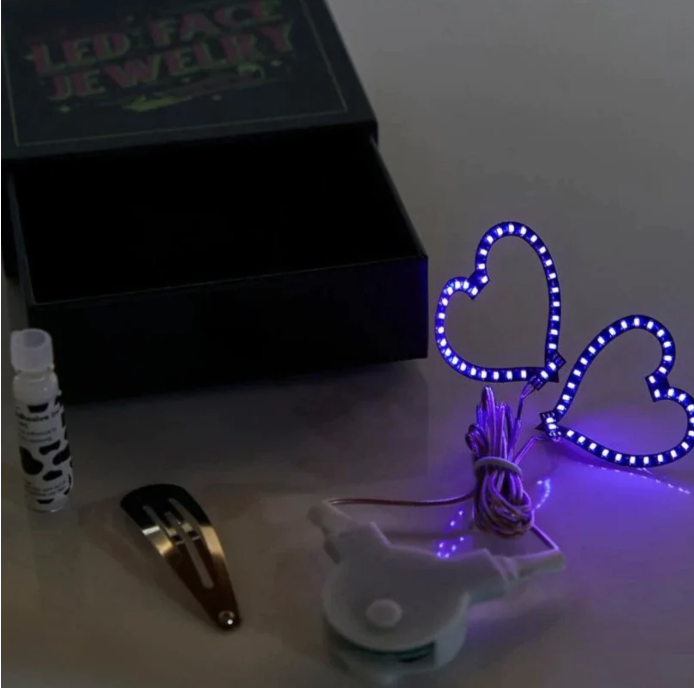
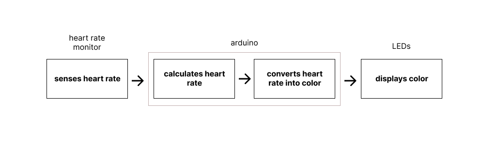
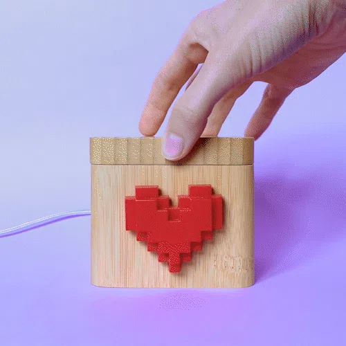

Project Background
I want the final project to touch on my interests in improving health and creating a more caring society. Social wearables seem to embody those interests because they may include physiological elements and are intented to increase connection. Research shows that even minimal social interactions may increase belonging so the following project proposals focus on just that.
Project Ideas
#1 Heart Rate Sync
The scene: Have you ever been to a silent disco with multiple channels? If not, here is an illustration of how it works. Everyone has on headphones where they can select one of three channels to listen to. When you select a channel, the sides of the headphones light up, so everyone around you knows what music you are listening to. The music on each channel is of different tempos and genres so it can be a bit of a bonding moment when you see someone with the same color as you.

This project idea builds on that concept with another glowing element. The wearer has a heart rate indicator in the form of an LED pin or face sticker. It changes color for a given heart rate threshold. Wearers can see who is their threshold. Another area of exploration is to see if the music channel being listened to is correlated with heart rate.
Project elements
#2 Warm connections
Having tea or coffee with a friend brings feelings of warmth for many people. How might we have those same connections when we are not physically present? For me, I most want to have more consistent connections with my grandmother throughout the day that does not require picking up the phone. With cuppa, when either my grandmother or myself take a sip of tea, the cup gently glows to let us know that the other person is enjoying a hot beverage. If you have multiple friends enjoying tea, cuppa lets you customize a color for each friend so you know who is sipping.
Drawing inspiration from the connection of a lovebox. The box heart spins to let your loved one know they have a message.
